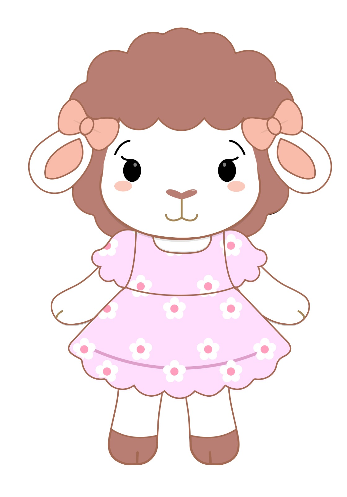

Nuestra embajadora
Conoce a Rosina
Rosina no es solo un dibujo — es la Embajadora de Calidad y la Asistente de Enseñanza de Lana Rosa Crochet. Una ovejita de lana esponjosa que representa la materia prima y la ternura de la marca.
¿Qué hace Rosina?
En educación
Ella da los "Tips de Rosina" para mejorar la técnica de tejido — pequeños consejos prácticos que compartimos en nuestras redes y talleres.
En insumos
Es la encargada de "probar" y recomendar las lanas que vendemos — si Rosina no la aprueba, no llega a la tienda.
Su personalidad
Conoce profundamente el crochet, pero se expresa con sencillez y profesionalismo — nunca con lenguaje complicado.
- Curiosa
- Detallista
- Muy amable
Un Tip de Rosina
"Antes de empezar un proyecto nuevo, teje siempre una muestra pequeña con la misma lana y aguja que vas a usar — así sabes cómo se comporta el hilo antes de comprometerte con la pieza completa. ¡Ahorra tiempo y frustraciones!" 🐑💕